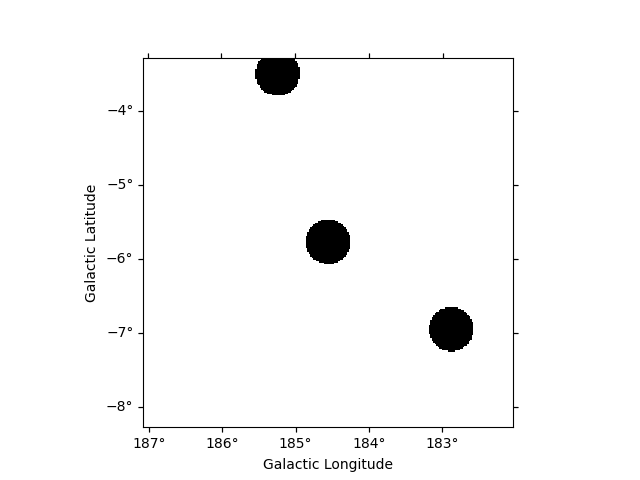
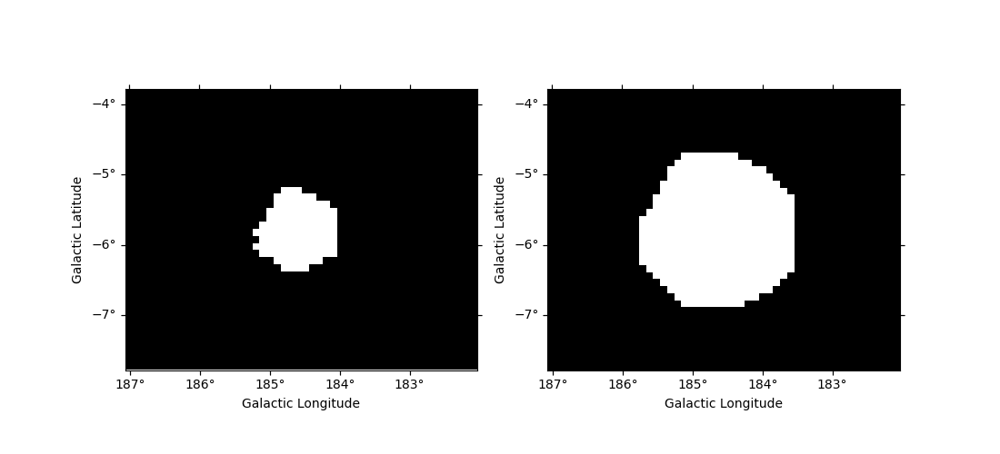

Note
Click here to download the full example code or to run this example in your browser via Binder
Mask maps#
Create and apply masks maps.
Prerequisites#
Understanding of basic analyses in 1D or 3D.
Usage of
regionsand catalogs, see the catalog notebook.
Context#
There are two main categories of masks in Gammapy for different use
cases. - Fitting often requires to ignore some parts of a reduced
dataset, e.g. to restrict the fit to a specific energy range or to
ignore parts of the region of interest that the user does not want to
model, or both. Gammapy’s Datasets therefore contain a mask_fit
sharing the same geometry as the data (i.e. counts). - During data
reduction, some background makers will normalize the background model
template on the data themselves. To limit contamination by real photons,
one has to exclude parts of the field-of-view where signal is expected
to be large. To do so, one needs to provide an exclusion mask. The
latter can be provided in a different geometry as it will be reprojected
by the Makers.
We explain in more details these two types of masks below:
Masks for fitting#
The region of interest used for the fit can defined through the dataset
mask_fit attribute. The mask_fit is a map containing boolean
values where pixels used in the fit are stored as True.
A spectral fit (1D or 3D) can be restricted to a specific energy range
where e.g. the background is well estimated or where the number of
counts is large enough. Similarly, 2D and 3D analyses usually require to
work with a wider map than the region of interest so sources laying
outside but reconstructed inside because of the PSF are correctly taken
into account. Then the mask_fit have to include a margin that take
into account the PSF width. We will show an example in the boundary mask
sub-section.
The mask_fit also can be used to exclude sources or complex regions
for which we don’t have good enough models. In that case the masking is
an extra security, it is prefereable to include the available models
even if the sources are masked and frozen.
Note that a dataset contains also a mask_safe attribute that is
created and filled during data reduction. It is not to be modified
directly by users. The mask_safe is defined only from the options
passed to the SafeMaskMaker (for more details see
`Safe Data Range Handling`_).
Exclusion masks#
Background templates stored in the DL3 IRF are often not reliable enough to be used without some corrections. A set of common techniques to perform background or normalisation from the data is implemented in gammapy: reflected regions for 1D spectrum analysis, field-of-view (FoV) background or ring background for 2D and 3D analyses.
To avoid contamination of the background estimate from gamma-ray bright regions these methods require to exclude those regions from the data used for the estimation. To do so, we use exclusion masks. They are maps containing boolean values where excluded pixels are stored as False.
Proposed approach#
Even if the use cases for exclusion masks and fit masks are different, the way to create these masks is exactly the same, so in the following we show how to work with masks in general: - Creating masks from scratch - Combining multiple masks - Extending and reducing an existing mask - Reading and writing masks
Setup#
import numpy as np
import astropy.units as u
from astropy.coordinates import Angle, SkyCoord
from regions import CircleSkyRegion, Regions
# %matplotlib inline
import matplotlib.pyplot as plt
from gammapy.catalog import CATALOG_REGISTRY
from gammapy.datasets import Datasets
from gammapy.estimators import ExcessMapEstimator
from gammapy.maps import Map, WcsGeom
Check setup#
from gammapy.utils.check import check_tutorials_setup
check_tutorials_setup()
System:
python_executable : /home/runner/work/gammapy-docs/gammapy-docs/gammapy/.tox/build_docs/bin/python
python_version : 3.9.16
machine : x86_64
system : Linux
Gammapy package:
version : 1.1.dev504+ga11d49073
path : /home/runner/work/gammapy-docs/gammapy-docs/gammapy/.tox/build_docs/lib/python3.9/site-packages/gammapy
Other packages:
numpy : 1.24.2
scipy : 1.9.3
astropy : 5.2.1
regions : 0.7
click : 8.1.3
yaml : 6.0
IPython : 8.11.0
jupyterlab : not installed
matplotlib : 3.7.0
pandas : not installed
healpy : 1.16.2
iminuit : 2.20.0
sherpa : 4.15.0
naima : 0.10.0
emcee : 3.1.4
corner : 2.2.1
Gammapy environment variables:
GAMMAPY_DATA : /home/runner/work/gammapy-docs/gammapy-docs/gammapy-datasets/dev
Creating a mask for fitting#
One can build a mask_fit to restrict the energy range of pixels used
to fit a Dataset. The mask being a Map it needs to use the same
geometry (i.e. a Geom object) as the Dataset it will be applied
to.
We show here how to proceed on a MapDataset taken from Fermi data
used in the 3FHL catalog. The dataset is already in the form of a
Datasets object. We read it from disk.
We can check the default energy range of the dataset. In the absence of
a mask_fit it is equal to the safe energy range.
print(f"Fit range : {dataset.energy_range}")
Fit range : (WcsNDMap
geom : WcsGeom
axes : ['lon', 'lat']
shape : (50, 40)
ndim : 2
unit : TeV
dtype : float64
, WcsNDMap
geom : WcsGeom
axes : ['lon', 'lat']
shape : (50, 40)
ndim : 2
unit : TeV
dtype : float64
)
Create a mask in energy#
We show first how to use a simple helper function
energy_range().
We obtain the Geom that is stored on the counts map inside the
Dataset and we can directly create the Map.
mask_energy = dataset.counts.geom.energy_mask(10 * u.GeV, 700 * u.GeV)
We can now set the dataset mask_fit attribute.
And we check that the total fit range has changed accordingly. The bin edges closest to requested range provide the actual fit range.
dataset.mask_fit = mask_energy
print(f"Fit range : {dataset.energy_range}")
Fit range : (WcsNDMap
geom : WcsGeom
axes : ['lon', 'lat']
shape : (50, 40)
ndim : 2
unit : TeV
dtype : float64
, WcsNDMap
geom : WcsGeom
axes : ['lon', 'lat']
shape : (50, 40)
ndim : 2
unit : TeV
dtype : float64
)
Mask some sky regions#
One might also exclude some specific part of the sky for the fit. For
instance, if one wants not to model a specific source in the region of
interest, or if one want to reduce the region of interest in the dataset
Geom.
In the following we restrict the fit region to a square around the Crab
nebula. Note: the dataset geometry is aligned on the galactic frame,
we use the same frame to define the box to ensure a correct alignment.
We can now create the map. We use the WcsGeom.region_mask method
putting all pixels outside the regions to False (because we only want to
consider pixels inside the region. For convenience we can directly pass
a ds9 region string to the method:
regions = "galactic;box(184.55, -5.78, 3.0, 3.0)"
mask_map = dataset.counts.geom.region_mask(regions)
We can now combine this mask with the energy mask using the logical and operator
Let’s check the result and plot the full mask.
_ = dataset.mask_fit.plot_grid(ncols=5, vmin=0, vmax=1, figsize=(14, 3))
Creating a mask manually#
If you are more familiar with the Geom and Map API, you can also
create the mask manually from the coordinates of all pixels in the
geometry. Here we simply show how to obtain the same behaviour as the
energy_mask helper method.
In practice, this allows to create complex energy dependent masks.
coords = dataset.counts.geom.get_coord()
mask_data = (coords["energy"] >= 10 * u.GeV) & (coords["energy"] < 700 * u.GeV)
mask_energy = Map.from_geom(dataset.counts.geom, data=mask_data)
Creating an exclusion mask#
Exclusion masks are typically used for background estimation to mask out
regions where gamma-ray signal is expected. An exclusion mask is usually
a simple 2D boolean Map where excluded positions are stored as
False. Their actual geometries are independent of the target
datasets that a user might want to build. The first thing to do is to
build the geometry.
Define the geometry#
Masks are stored in Map objects. We must first define its geometry
and then we can determine which pixels to exclude. Here we consider a
region at the Galactic anticentre around the crab nebula.
position = SkyCoord(83.633083, 22.0145, unit="deg", frame="icrs")
geom = WcsGeom.create(skydir=position, width="5 deg", binsz=0.02, frame="galactic")
Create the mask from a list of regions#
One can build an exclusion mask from regions. We show here how to proceed.
We can rely on known sources positions and properties to build a list of
regions (here SkyRegions) enclosing most of the signal that
our detector would see from these objects.
A useful function to create region objects is
parse. It can take strings defining regions
e.g. following the “ds9” format and convert them to regions.
Here we use a region enclosing the Crab nebula with 0.3 degrees. The actual region size should depend on the expected PSF of the data used. We also add another region with a different shape as en example.
regions_ds9 = "galactic;box(185,-4,1.0,0.5, 45);icrs;circle(83.633083, 22.0145, 0.3)"
regions = Regions.parse(regions_ds9, format="ds9")
print(regions)
[<RectangleSkyRegion(center=<SkyCoord (Galactic): (l, b) in deg
(185., -4.)>, width=1.0 deg, height=0.5 deg, angle=45.0 deg)>, <CircleSkyRegion(center=<SkyCoord (ICRS): (ra, dec) in deg
(83.633083, 22.0145)>, radius=0.3 deg)>]
Equivalently the regions can be read from a ds9 file, this time using
Regions.read.
# regions = Regions.read('ds9.reg', format="ds9")
Create the mask map#
We can now create the map. We use the WcsGeom.region_mask method
putting all pixels inside the regions to False.
# to define the exclusion mask we take the inverse
mask_map = ~geom.region_mask(regions)
plt.figure()
mask_map.plot()
<WCSAxes: >
Create the mask from a catalog of sources#
We can also build our list of regions from a list of catalog sources.
Here we use the Fermi 4FGL catalog which we read using
SourceCatalog.
fgl = CATALOG_REGISTRY.get_cls("4fgl")()
We now select sources that are contained in the region we are interested in.
We now create the list of regions using our 0.3 degree radius a priori value. If the sources were extended, one would have to adapt the sizes to account for the larger size.
exclusion_radius = Angle("0.3 deg")
regions = [CircleSkyRegion(position, exclusion_radius) for position in positions]
Now we can build the mask map the same way as above.
<WCSAxes: >
Create the mask from statistically significant pixels in a dataset#
Here we want to determine an exclusion from the data directly. We will
estimate the significance of the data using the ExcessMapEstimator,
and exclude all pixels above a given threshold.
Here we use the MapDataset taken from the Fermi data used above.
We apply a significance estimation. We integrate the counts using a correlation radius of 0.4 degree and apply regular significance estimate.
estimator = ExcessMapEstimator("0.4 deg", selection_optional=[])
result = estimator.run(dataset)
Finally, we create the mask map by applying a threshold of 5 sigma to remove pixels.
significance_mask = result["sqrt_ts"] < 5.0
Because the ExcessMapEstimator returns NaN for masked pixels, we
need to put the NaN values to True to avoid incorrectly excluding
them.
invalid_pixels = np.isnan(result["sqrt_ts"].data)
significance_mask.data[invalid_pixels] = True
plt.figure()
significance_mask.plot()
<WCSAxes: >
This method frequently yields isolated pixels or weakly significant features if one places the threshold too low.
To overcome this issue, one can use
apply_hysteresis_threshold . This filter allows to
define two thresholds and mask only the pixels between the low and high
thresholds if they are not continuously connected to a pixel above the
high threshold. This allows to better preserve the structure of the
excesses.
Note that scikit-image is not a required dependency of gammapy, you might need to install it.
Masks operations#
If two masks share the same geometry it is easy to combine them with
Map arithmetic.
OR condition is represented by | operator :
mask = mask_map | mask_map_catalog
plt.figure()
mask.plot()
<WCSAxes: >
AND condition is represented by & or * operators :
<WCSAxes: >
The NOT operator is represented by symbol:
<WCSAxes: >
Mask modifications#
Mask dilation and erosion#
One can reduce or extend a mask using binary_erode and
binary_dilate methods, respectively.
plt.figure()
mask = significance_mask_inv.binary_erode(width=0.2 * u.deg, kernel="disk")
mask.plot()
plt.figure()
mask = significance_mask_inv.binary_dilate(width=0.2 * u.deg)
mask.plot()
- 

<WCSAxes: >
Boundary mask#
In the following example we use the Fermi dataset previously loaded and
add its mask_fit taking into account a margin based on the psf
width. The margin width is determined using the containment_radius
method of the psf object and the mask is created using the
boundary_mask method available on the geometry object.
# get PSF 95% containment radius
energy_true = dataset.exposure.geom.axes[0].center
psf_r95 = dataset.psf.containment_radius(fraction=0.95, energy_true=energy_true)
# create mask_fit with margin based on PSF
mask_fit = dataset.counts.geom.boundary_mask(psf_r95.max())
dataset.mask_fit = mask_fit
plt.figure()
dataset.mask_fit.sum_over_axes().plot()
plt.show()
Reading and writing masks#
gammapy.maps can directly read/write maps with boolean content as
follows:
# To save masks to disk
mask_map.write("exclusion_mask.fits", overwrite="True")
# To read maps from disk
mask_map = Map.read("exclusion_mask.fits")